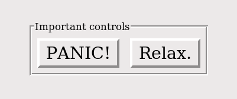

Le widget «cadre étiqueté», LabelFrame, comme le widget Frame, est avant tout un conteneur. Il se présente comme une zone rectangulaire dans laquelle il est possible de mettre d’autres widgets. Cependant, contrairemet au cadre Frame, il vous permet d’afficher une étiquette sur sa bordure.
Voici un exemple de cadre étiqueté qui contient deux boutons. Remarquez que l’étiquette “Important controls” interrompt la bordure. Cette figure illustre les valeurs par défaut du widget: un relief ‘groove’ (Voir Les styles de relief) et une étiquette ancrée au nord ouest, 'nw', c’est à dire en haut à gauche du cadre.
Pour créer un cadre étiqueté dans une fenêtre mère ou un cadre parent:
Retourne le cadre étiqueté créé. Ses options sont:
| Paramètres: |
|
|---|